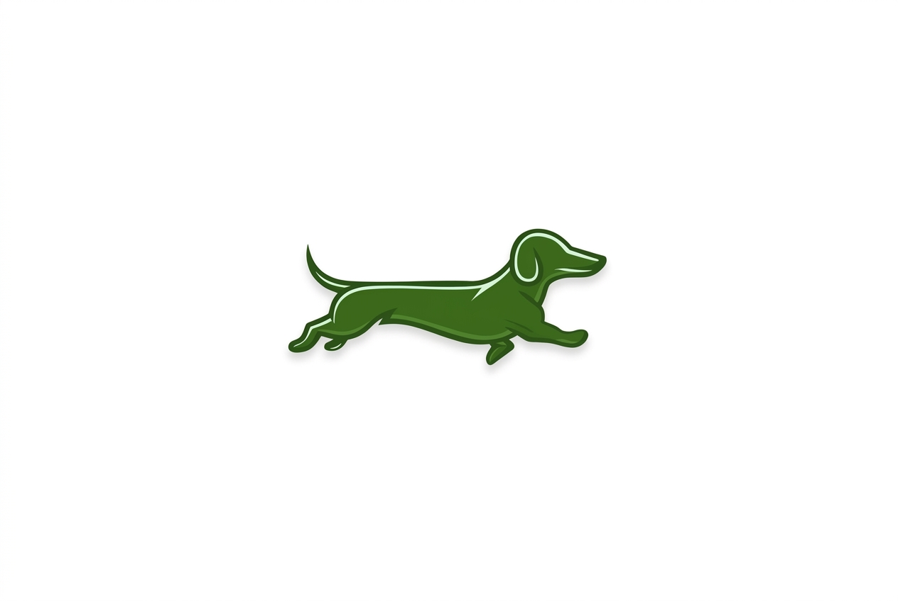
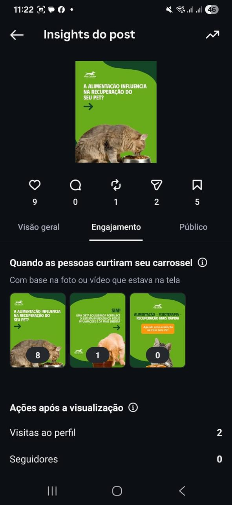
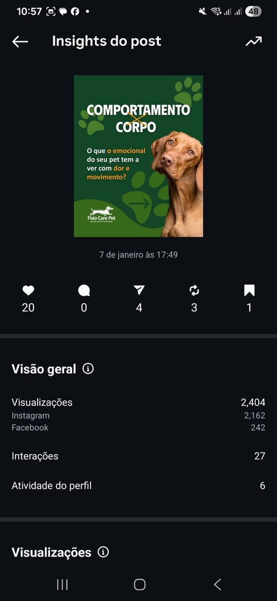
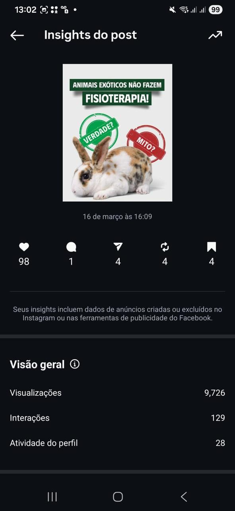
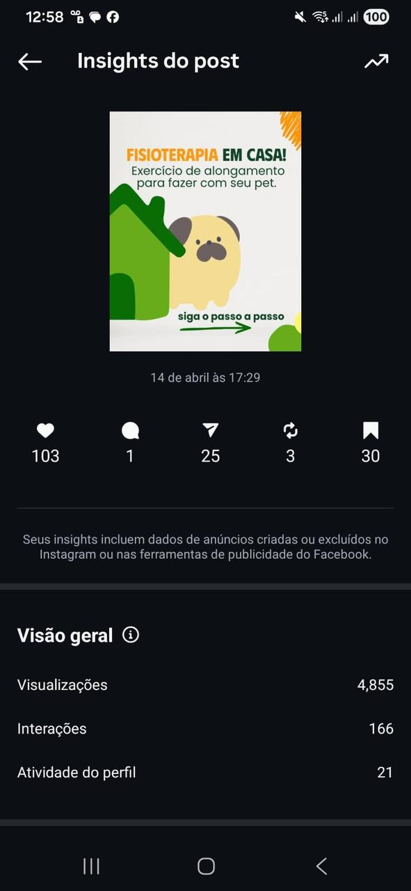

Case de Sucesso
Fisio Care Pet | Redes Sociais
Uma comunidade de mais de 30 mil seguidores que quase não interagia passou a gerar 25x mais curtidas e 10x mais engajamento orgânico em cerca de três meses, sem mídia paga.

O desafio
Muita audiência, pouca conversa
Apesar de possuir uma comunidade com mais de 30 mil seguidores, a Fisio Care Pet enfrentava um problema comum em muitas marcas: a falta de audiência real.
As publicações raramente ultrapassavam 30 curtidas e algumas não chegavam a 10 interações. A comunicação era excessivamente técnica, distante e pouco conectada com a realidade dos tutores de animais.
Os principais desafios eram:
- Baixo engajamento orgânico;
- Linguagem institucional e pouco humanizada;
- Ausência de identidade editorial;
- Conteúdos que informavam, mas não despertavam interesse;
- Falta de conexão emocional com o público.
Mais do que aumentar métricas, era necessário reconstruir a forma como a marca conversava com sua audiência.
A estratégia
De comunicação técnica a narrativa de marca
Antes de produzir qualquer conteúdo, realizei um estudo sobre o comportamento do público, os arquétipos da marca e o posicionamento dos concorrentes. O objetivo era transformar a comunicação em uma narrativa capaz de gerar identificação, confiança e relacionamento.
Redefinição do tom de voz
Os conteúdos passaram a conversar diretamente com o tutor, utilizando uma comunicação mais acolhedora, próxima e empática, sem perder a credibilidade científica da empresa.
Direção criativa
Reorganizei toda a estratégia editorial ao lado da equipe de design, definindo formatos, estruturas de carrosséis, ordem das informações e chamadas visuais que aumentassem o tempo de permanência e estimulassem a interação.
Copywriting orientado ao comportamento
Cada legenda passou a ser construída considerando o comportamento do tutor moderno, com storytelling, gatilhos emocionais, curiosidade, identificação, educação e incentivo ao compartilhamento. Também realizei testes A/B em diferentes formatos.
Conteúdo estratégico
O calendário editorial deixou de ser apenas institucional e passou a equilibrar conscientização, educação, autoridade, entretenimento, relacionamento e fortalecimento da marca.
Resultados
Três meses depois, sem qualquer investimento em mídia paga
Mais curtidas por publicação
Mais visualizações por postagem
Mais engajamento nos conteúdos
Investimento em impulsionamento
Antes
Publicações com 9 e 20 interações e visualizações modestas.


Depois
Publicações ultrapassando 9 mil visualizações e mais de 160 interações.


Antes
- • Publicações com menos de 30 curtidas
- • Comunicação técnica e distante
- • Baixíssima interação da comunidade
- • Ausência de identidade editorial
Depois
- • Publicações com centenas de curtidas e milhares de visualizações
- • Comunicação humanizada e empática
- • Comunidade ativa e engajada
- • Identidade editorial consistente por formato
Quer transformar seu perfil em comunidade?
Quando storytelling, direção criativa e copywriting trabalham juntos, a comunicação vira uma ferramenta de relacionamento capaz de gerar resultados consistentes.
Falar sobre meu projeto